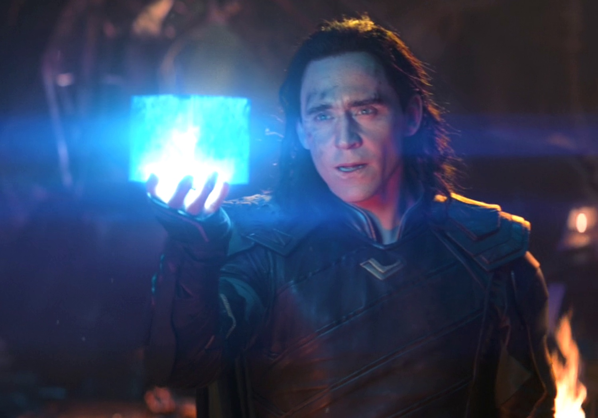
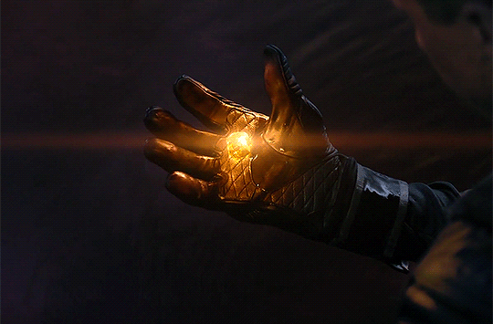
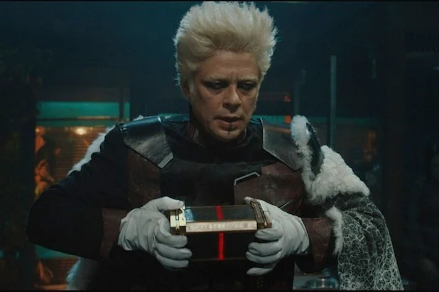
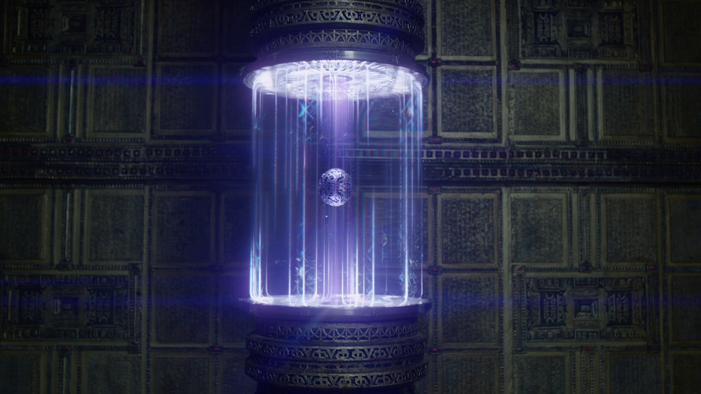
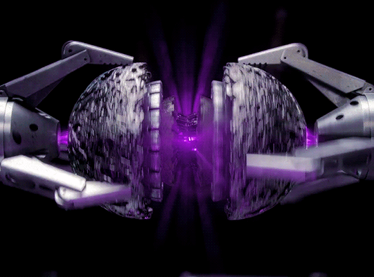
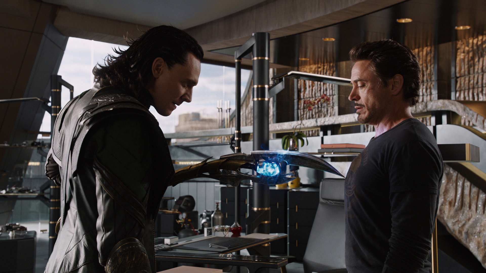

Early on in the movies they started laying out clues for what the purpose of the infinity stones might be, where they might be located,
and why Thanos was trying to collect them all.
This website will go over a common fan theory that was, at the time, very likely to be true.
For some reason, in Avengers: Infinity War, Marvel Studios decided to go against some of the set-ups they had
previously established and go in a completely different direction with one of the stones.
Nontheless, the fan theory is still pretty cool, in my opinion, and I wanted to dedicate my website to it.
FAN THEORY
This fan theory states that the name "Thanos" is actually an acronym; each letter in his name stands for the name of the container that houses its respective Infinity Stone.
T

Tesseract
- Info:
- Blue Cube
- Allows the holder to teleport between spaces

Space
Stone
H
UNKNOWN
- Info:
- We know it is supposed to be orange
- We don't know what the container is, or what it does specifically.

Soul
Stone
A

Aether
- Info:
- The only stone that was found in liquid, called the Aether
- Contained in a device, for easy transport
- Alters reality
Reality
Stone
N

Necklace
- Info:
- Housed in the necklace of Agamotto
- Controls time
- Kept safe by the Sorcerer Supreme

Time
Stone
O

Orb
- Info:
- Contained in a metal orb that was left alone in a vault
- Gives the person using it immense physical power

Power
Stone
S

Scepter
- Info:
- Contained in Loki's scepter
- Besides the scepter being a weapon, it can also be used to mind control people
Mind
Stone
The fact that each container happened to line up with a letter in Thanos' name made people wonder, "Where is the Soul Stone contained?"
A couple of scenes in the Thor movies and in Avengers: Age of Ultron made people believe that the Soul Stone was contained in the eyes of Heimdall.